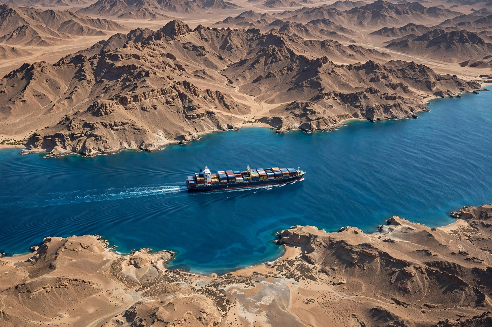

From Wikipedia, the free encyclopedia

| Gulf of Aden | |
|---|---|
| Location | Between Yemen (Arabian Peninsula) and Djibouti, Somaliland and Somalia (Horn of Africa) |
| Connects | Red Sea via Bab el-Mandeb (west) to the Arabian Sea (east) |
| Length | About 900 km |
| Major ports | Aden, Djibouti City, Berbera, Bosaso |
The Gulf of Aden is a deepwater gulf of the Arabian Sea between Yemen on the Arabian Peninsula and Djibouti, Somaliland and Somalia on the Horn of Africa. In the west it narrows into the strait of Bab el-Mandeb, which connects it to the Red Sea and thus, via the Suez Canal, to the Mediterranean Sea. The island of Socotra guards its eastern approaches. The port of Aden, near the western end of the Yemeni shore, gives the gulf its name.
The gulf is one of the world's most important shipping lanes: the route through the Gulf of Aden, Bab el-Mandeb and the Suez Canal carries a large share of trade between Asia and Europe, including roughly a tenth of global seaborne oil trade in normal times. More than twenty thousand ships a year have transited the waterway. Because the gulf is a classic chokepoint, disruption there forces container lines to reroute around the Cape of Good Hope, adding weeks to voyages.
From the late 2000s the gulf became notorious for piracy emanating from Somalia, prompting international naval patrols (including Combined Task Force 151 and EU NAVFOR Operation Atalanta) and the adoption of armed guards and convoy practices, after which successful hijackings fell sharply. From November 2023, attacks on shipping by Yemen's Houthi movement, beginning with the seizure of the car carrier Galaxy Leader, again sharply reduced traffic through the gulf and Bab el-Mandeb.
The gulf is a young ocean basin created by the rifting of Arabia away from Africa, part of the same process that opened the Red Sea and the East African Rift; oceanic spreading began roughly 20 million years ago and continues today.